Espressif ESP32-WROOM
Video tutorial: Pokemon Automation Wireless setup with ESP32: https://youtu.be/YzGyQQOGjl8
This setup uses an ESP32 microcontroller to emulate a wireless controller. It can emulate both left and right joycons as well as the wireless pro controller. Since this covers all the controller types, an ESP32 will be able to run nearly our entire repertoire of programs for the Nintendo Switch.
The USB port plugs into the computer which is how the program will control it. At the other end is an antenna that supports Bluetooth which is how it will fake itself as a joycon or a wireless pro controller to the Switch.
 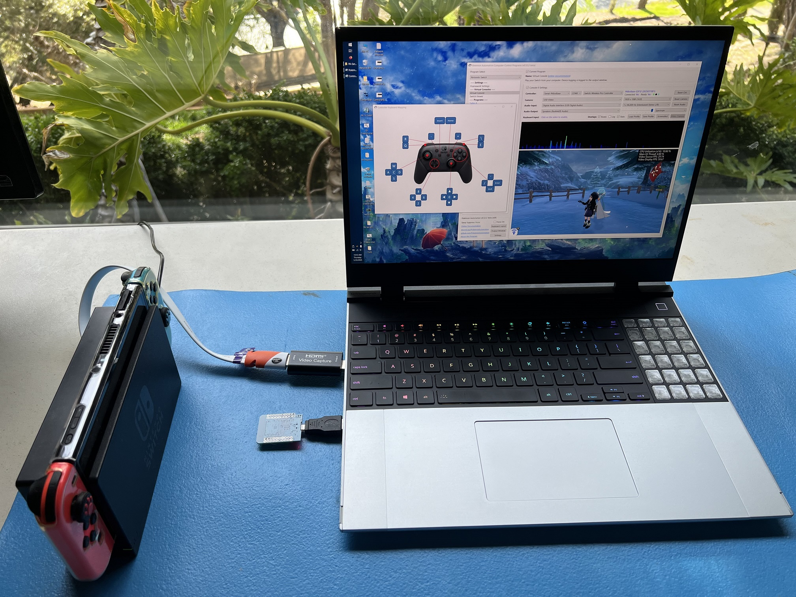
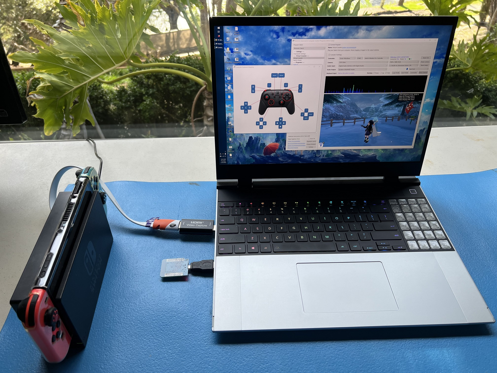
Hardware Setup:
Required Hardware (Full List):
- A regular Nintendo Switch and its accessories (dock, power cable, HDMI cable). (You cannot use a Switch Lite.)
- A computer running x64 Windows. (or another OS if you are able to set it up.)
- A video capture card.
- An ESP32-WROOM-32 microcontroller.
- A micro-USB or USB-C to USB-A cable or dongle. Needs to connect your ESP32 to your computer. ESP32 can have either micro-USB or USB-C, so find out what you have before buying the cable for it.
#1-3 are part of the initial setup so you should have all of these already.
Estimated Total Cost (USD): (not including computer and Nintendo Switch)
- Single Setup: $20 - $30
- Capture Card: $10 - $20
- ESP32: $8
- USB Cable/Adapter: $2
- Bulk Purchase: ~$14 per setup
- Capture Card: $10
- ESP32: $3 each from AliExpress
- USB Cable/Adapter: < $1 each from AliExpress
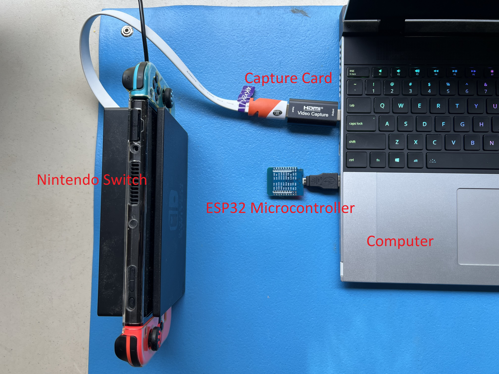
Important: There are many variants of the ESP32 microcontroller. The ESP32-WROOM is the only one that works here. So you must get that specific model. (e.g. Don't get the ESP32-S3-WROOM, or ESP32-S2-WROOM, or ESP32-C2, etc.)
Recommended Purchase Links:
Capture Card: See previous section.
ESP32-WROOM-32 Microcontroller:
For Beginners
| Quantity | Price / Unit | USB Type | UART Type | Shopping Link |
|---|---|---|---|---|
| 1 (with pins) | $8 / unit | USB-C | CP2102 | https://www.amazon.com/gp/product/B0DG8JFY3C |
| 2 (with pins) | $6.50 / unit | Micro-USB | CP2102 | https://www.amazon.com/gp/product/B09XDMVS9N |
| 2 (no pins) | $9 / unit | USB-C | CH340 | https://www.amazon.com/gp/product/B0D6BH4K9B |
For Experienced users
| Quantity | Price / Unit | USB Type | UART Type | Shopping Link |
|---|---|---|---|---|
| 3 (no pins) | $5.67 / unit | Micro-USB | CP2104 | https://www.amazon.com/gp/product/B09C5RDZ8G |
| 8 (no pins) | $5 / unit | Micro-USB | CP2104 | https://www.amazon.com/gp/product/B08MFCC4SR |
| many | ~$3 / unit | various | various | https://www.aliexpress.us/item/3256807120332765.html AliExpress is generally the cheapest in bulk. But you need to know what you're buying. |
Important: If you pick a model that's not in this list, make sure it has a built-in antenna. The ESP32-WROOM-32U and ESP32-WROOM-32UE models do not have a built-in antenna and require you to attach one.
If you're not experienced with electronics, we recommend buying one with both the Reset/EN and Boot/IO0 buttons, because it makes it easier to troubleshoot certain issues. All of the boards listed in the "For Beginners" section should have both the Reset and Boot buttons. The D1 mini boards (listed under "For Experienced users") are cheaper and smaller, but they only have a single Reset button, which can make it harder to troubleshoot certain issues.
We recommend getting ones without pins since you don't need them (though they are more expensive). Having the pins is a liability for accidentally shorting out and damaging the board.
Most likely you will end up buying a pack of at least 2 or 3 since they don't get any cheaper in single quantity. This is great if you want to automate multiple Switches.

 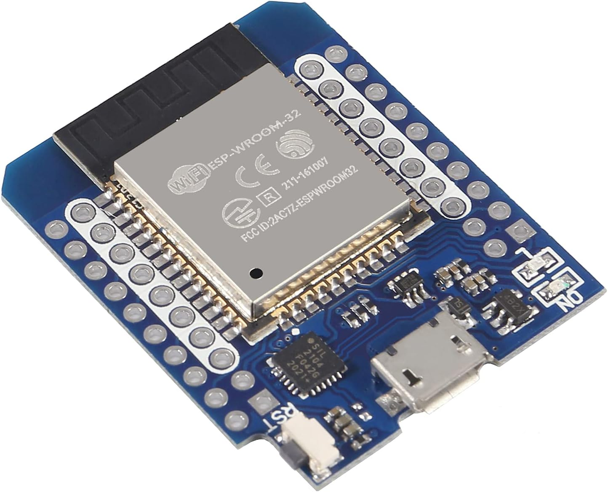
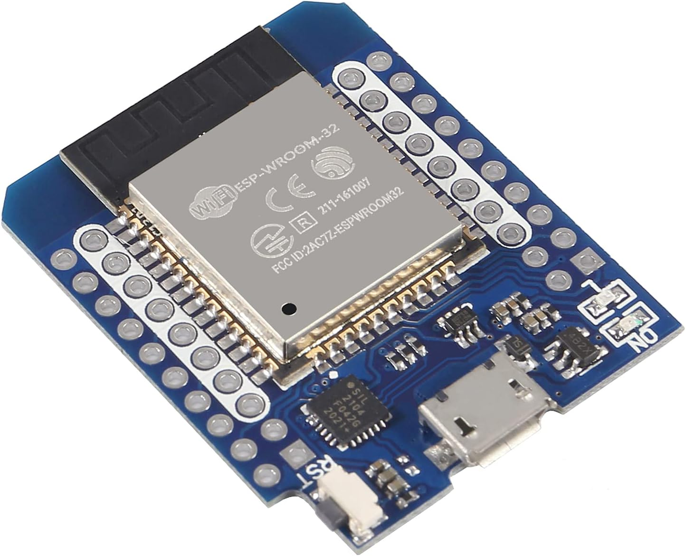
A micro-USB or USB-C to USB-A cable:
- Micro-USB -> USB-A Cable: https://www.amazon.com/Android-Compatible-Smartphones-Charging-Stations/dp/B095JZSHXQ
- Micro-USB -> USB-A Dongle: https://www.amazon.com/gp/product/B09FXJD61Z
- USB-C -> USB-A: https://www.amazon.com/Charging-Durable-Station-Compatible-Samsung/dp/B08LL1SVZD
Different ESP32 models have different USBs on them. Make sure you buy the one that matches your model.
Hardware Assembly:
Should be pretty self-explanatory:
- Connect the ESP32 to your computer using the USB cable.
- Place the ESP32 near your Switch. (within 3ft line-of-sight for maximum stability)
And that's it!
Software Setup
Step 0: Getting Ready
Make sure you have everything else setup so that it looks like this:
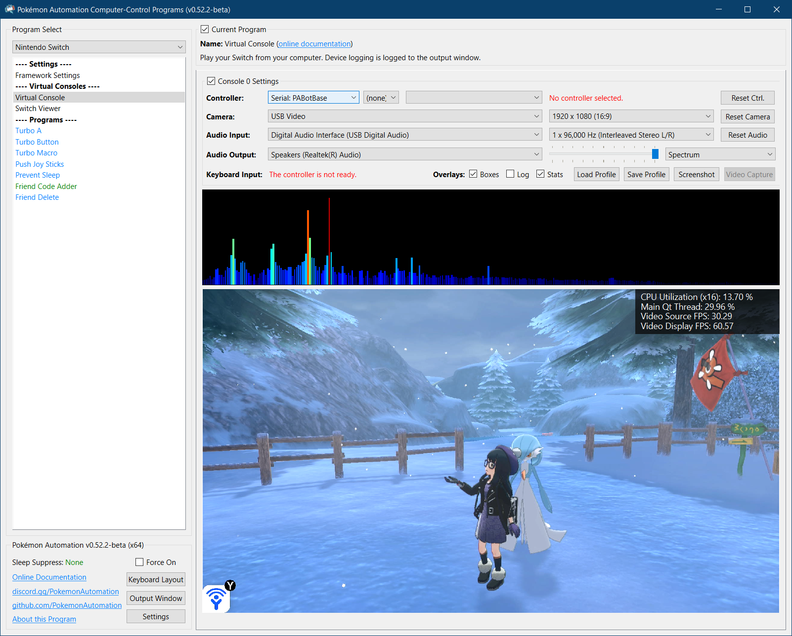
If not, you should go back to the general setup guide and start over.
Step 1: Install UART drivers
Depending on exactly which ESP32 model you bought, it will have either an CH340 or a CP210x. (If you recognize these model #s from the wired controller setup, they are the same thing!)
Install the appropriate driver for it:
- CP210x: https://www.silabs.com/documents/public/software/CP210x_Windows_Drivers.zip
- CH340: https://www.arduined.eu/ch340-windows-10-driver-download/
If you don't know which one you have, install both.
Open up Device Manager and look for it under "Serial Ports". If you don't see it, then maybe these above drivers are not correct. Or try a different USB port.
Step 2: Flash the firmware to the ESP32.
Flash the ESP32:
- Download the Espressif flash utility: https://dl.espressif.com/public/flash_download_tool.zip
- Unzip, then run
flash_download_tool_3.9.7.exe(version number may vary) -
When you see the following menu, select "ESP32" and "Develop". Then hit OK.
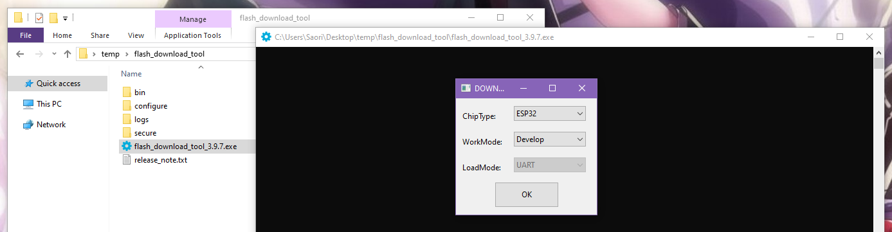
-
You will then be prompted with this complicated window. Fill everything as follows:
- Check the box for the first entry, at the top left.
- For the first entry, click on the
...and browse forPABotBase-ESP32-2025032100.binin the serial programs download folder. (version number may vary) - The right-most box should be a zero.
- The top row should now be green (see image below). If not, ensure that the top left checkbox is checked.
- At the bottom right corner, select the COM port of your ESP32.
- Change "BAUD" to 460800.
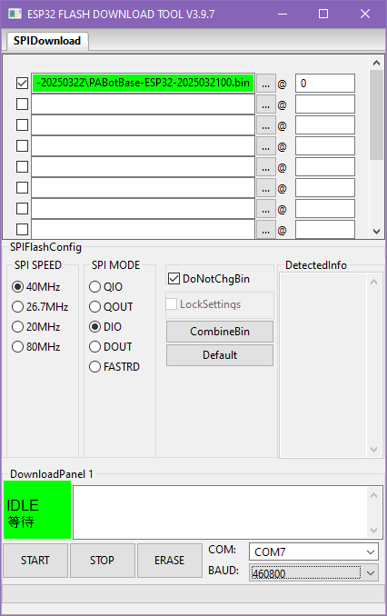
-
Click Start and it should flash the PABotBase firmware to your ESP32.
If everything worked correctly, you should see a green progress bar like this. If you see that it gets stuck printing out
...and never makes progress, see troubleshooting.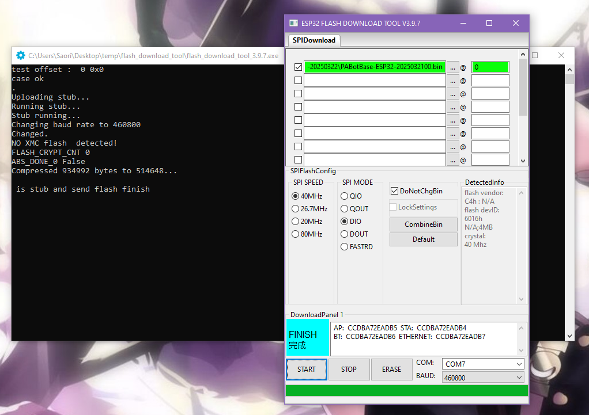
-
Reboot your ESP32. You can do this either by:
- Unplugging and re-plugging your ESP32.
- Pressing either the
ENorRESETbutton on the ESP32.
Step 3: Navigate to the Grip Menu
The Grip menu is the only place where the ESP32 can connect to the Switch.
To get there from the Switch Home screen: Controllers (button next to the Settings gear) -> Change Grip/Order

Step 4: Connect the ESP32 to the Computer Control program
- At the top for the "Controller" option, click the dropdown and select
Serial: PABotBase(should be on this since this is the default) - In the next dropdown, select your serial device. On Windows it will be something like
COM3.
If you don't see the device in the dropdown, you probably need to refresh it (especially if you kept the program open since Step 0). You can refresh the list by clicking "Reset Ctrl".
If everything worked correctly, it will look like this:
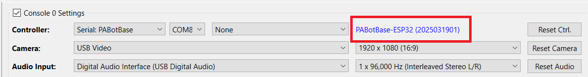
If you do not see this or you get an error, then see troubleshooting.
Step 5: Connect the ESP32 to the Switch
In the 3rd dropdown, choose "Switch: Wireless Pro Controller".
After 5 seconds, you should see a controller pop-up in the Grip menu on the Switch. If the controller doesn't show up, then press the EN or RESET button on the ESP32 board, then click "Reset Ctrl." and wait another 5 seconds. Alternatively, unplug/replug the ESP32.
The controller colors are randomized and should match the color icons in the status indicator. This helps to distinguish controllers if you have multiple of them. You can change the colors in the Nintendo Switch -> Framework Settings menu.
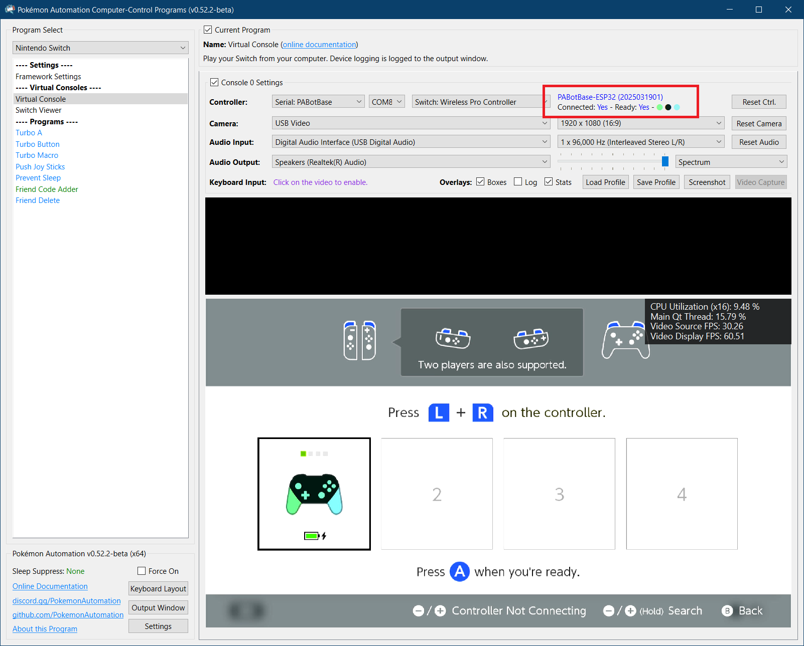
Step 6: Test the connection
You can control your Switch from the keyboard. Click on the video display to activate the keyboard controls. Then try pressing some buttons. You can view the keyboard -> controller mapping by clicking on the "keyboard layout" at the bottom left corner of the program.
The default keyboard layout is the English QWERTY layout. If you have a different layout, you can change the mappings in Nintendo Switch -> Framework Settings and scroll down to the controller mapping tables.
We recommend familiarizing yourself with the keyboard controls as this is the preferred way to control your Switch while setting up to run a program. Each controller type has a different keyboard mapping. By default, the joystick (left joystick for Pro Controller) is mapped to the usual WASD setup that's used in FPS games. For joycons, there are two sets of mappings (using different keys) that will serve both vertical and sideways orientations.
Overall, the idea here is that you can play your Switch from your computer. While it's not as nice as using a native controller, it is good enough to easily setup programs - especially if you're doing this remotely where you do not have physical access to the Switch.

Controller Types:
You will notice that there are 4 controller options:
- None
- Pro Controller
- Left Joycon
- Right Joycon
"None" simply idles the ESP32 and turns off its antenna so it isn't trying to connect to a Switch. The others tell the ESP32 to act as that controller respectively. Every time you press "Reset Ctrl" or change the controller type, it will disconnect from your Switch and try to reconnect using the new controller type. So you will need to be in the Grip menu or it will stay disconnected. (important if you are accessing remotely!)
Changing programs (or even closing the application entirely) will not disconnect the ESP32 from the Switch. When you load a program and connect to the ESP32, it will automatically continue its previous connection to the Switch (and change the controller dropdown accordingly). So you can remotely control your Switch if you are careful enough.
If you intend to do a lot of remote access, we recommend that you use a wired setup as a wired controller can connect to the Switch from anywhere and take control.
Connecting as a Joycon:
When you connect as a joycon, it will behave like a normal joycon. It doesn't immediately connect and wants you to either pair with a 2nd joycon or press SL+SR to put it into horizontal mode.
For the right joycon, you can press the Home button to immediately leave the grip menu. This will let you easily start LGPE programs which use the right joycon. The left joycon doesn't have this option and will require you to either pair with a right joycon or to enter horizontal mode. There are currently no programs that use the left joycon.
To enter horizontal mode, you can press SL+SR on the keyboard controls by pressing F1 and F3 at the same time. This will let you exit the grip menu and enter a game like LGPE that requires a joycon. But keep in mind that this will also rotate the controls by 90 degrees (IOW, confusing). Check the keyboard mapping for both vertical and horizontal joycon orientations.
*You cannot easily pair two ESP32 joycons anyway since you need to press L+R on them simultaneously and the keyboard controls don't allow you simultaneously press buttons on different controllers. However, you can easily pair an ESP32 joycon with a real joycon.
Step 7: You are done!
If keyboard commands are working (along with video and audio), you are done!
Try clicking on other programs on the sidebar. You will find that all of them are "virtual consoles" that will accept keyboard commands. At the top of every program is a link to the wiki that explains how to setup and use that program.
Continue on to Finishing Up!
Troubleshooting:
Unable to flash the ESP32. (stuck on ...)
If you see that it gets stuck printing out ... and never makes progress, try one of these:
Solution 1:
- Start the flash such that it is printing out
... - Press and hold the
BOOTbutton on the ESP32. - Release the
BOOTbutton when you see the green bar make progress.
Solution 2:
- Start the flash such that it is printing out
... - Press and hold the
RESET(EN) button. - Press and hold the
BOOTbutton. - Release the
RESET(EN) button. - Release the
BOOTbutton.
If your ESP32 doesn't have a BOOT button (such as the D1 mini ESP32), you can achieve the same thing by shorting the IO0 and GND pins/holes.
If neither solution works:
- Try a different USB port.
- Try putting a USB2 hub between the computer and the ESP32.
If nothing works, you are not alone! This is a common problem with ESP32 boards.
- Further reading: https://www.reddit.com/r/esp32/comments/11awl5h/a_fatal_error_occurred_failed_to_connect_to_esp32/
- Come to our Discord for help.
Unable to flash the ESP32: no log file output
- Try switching the USB cable. Make sure it supports data transfer, not just power delivery.
- When plugging in the ESP32, the device should show up in
Device Manger, under Ports.
- When plugging in the ESP32, the device should show up in
Problem with flashing ESP32: Download tool shows FINISH, but no green progress bar appeared.`
Ensure the top left checkbox is checked. The top row should be green. Ensure the correct COM is selected, and BAUD is set to 460800. Then try flashing again.
Unable to connect to the ESP32. e.g. stuck on Connecting...
If you are unable to connect to the ESP32 in step 4, it means the ESP32 either isn't booting up properly, or it isn't properly flashed.
Try the following:
- Ensure you have reset the device. Try disconnecting the cable to the ESP32-S3 device, then reconnect it.
- Try different USB cables and different USB ports. Sometimes it will not flash properly over certain USB ports.
- If this still fails, review step 2 above (Flash the firmware to the ESP32) and ensure that you flashed the firmware properly onto the device. When flashing, ensure that the top left checkbox is checked. The top row should be green.
ESP32 fails to connect to Switch.
If in step 5, you are unable to connect to the Switch, (controller never shows up), here are some things to check:
- Is it close enough to the Switch? (these are wireless devices after all)
- Is the Switch in airplane mode?
- Is it already paired with a different Switch?
- There are reports of CFW ldm-mitm interfering with the ESP32. (This is a bug which we have yet to investigate.)
Wireless Interference with Multiple ESP32s.
If you have multiple ESP32s, spread them out to reduce wireless interference.
As tempting as it may be, do not do this:
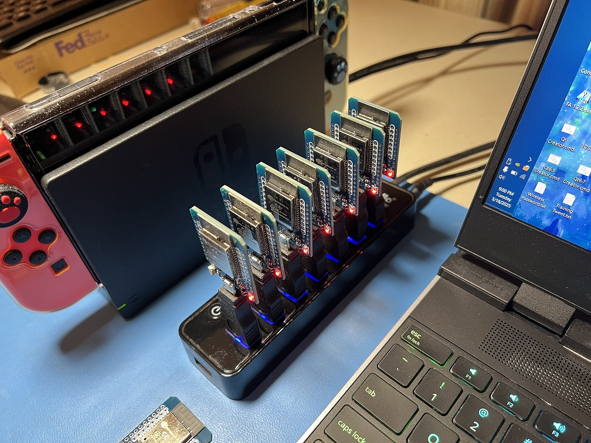 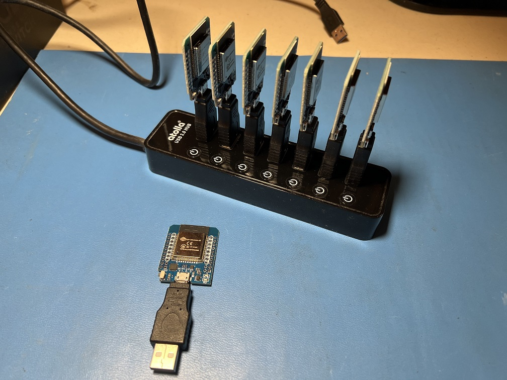
It is as cute as it is stupid, and it will give you problems. We tried it so you don't have to!
Credits:
- Kuroneko/Mysticial
- jw
- kichithewolf
Discord Server: